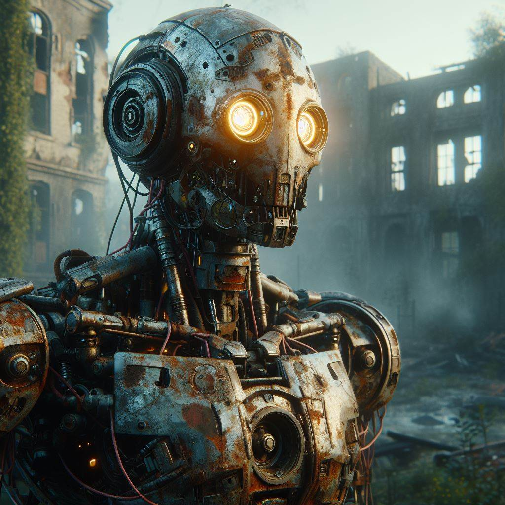

Esse e o inicio do nosso site de robótica, este site foi desenvolvido durante as aulas de programação (matematica II), esse site tem a função de publicar os projetos elaborados durante as aulas de robotica, somos os alunos do 2 ano de exatas, nas próximas páginas mostraremos mais dos nossos projetos para vocês.